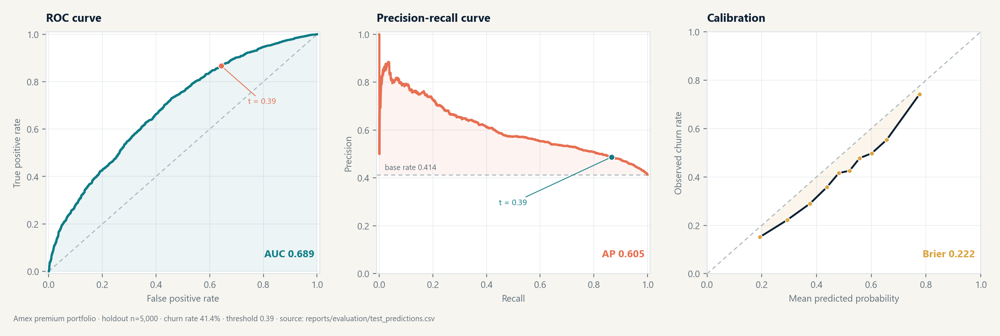

Score a single account
Churn probability, risk tier, recommended tier, margin lift, and migration priority update live.
Premium card portfolio · tier migration & margin
A reproducible migration model built on a synthetic Amex-style premium-card portfolio. It scores churn risk and expected annual margin for every tier — No-Fee through Centurion — and recommends upsell, maintain, downsell, or retention.
Live client-side scorer · logistic regression · threshold tuned out-of-fold · one-time holdout evaluation
Portfolio snapshot
Model liveThe browser scorer runs exported logistic-regression coefficients client-side: no login, no server, no customer data leaves the device.
01 · What the data says
A No-Fee customer with high spend may be worth more on Platinum. A Platinum customer with rising delinquency may be worth retaining on Gold. The model makes that trade-off explicit per customer.
02 · The workbench
The Streamlit app turns the model into six linked surfaces: overview, single-customer tier scorer, batch migration, margin optimization, model performance, and method notes. The public browser scorer below is the same fitted model exported to JavaScript.
Churn probability, risk tier, recommended tier, margin lift, and migration priority update live.
Upload a CSV, validate rows, score every customer, and download a ranked migration list.
Simulate fee and interest assumptions to see portfolio-level margin opportunity.
Model card, data dictionary, reproduction steps, and responsible-use notes beside the scores.
03 · Evaluation
Logistic regression is compared against a 5-fold stratified CV. The threshold is tuned on out-of-fold training predictions, then evaluated once on a holdout set.
At the deployed 0.39 threshold: 48.7% precision · 86.7% recall · F1 0.624 · Brier 0.222. The threshold is tuned on out-of-fold predictions, not on the holdout.

ROC, precision-recall, and calibration for the 5,000-customer holdout. Regenerate from reports/evaluation/test_predictions.csv with python -m card.train.
04 · Method
The browser scorer is a client-side implementation of the trained pipeline, generated by
python -m card.browser_export. The Streamlit workbench remains the full native reference.
The logistic-regression intercept, one-hot coefficients, imputer medians, and scaler parameters come directly from models/card_tier_model.joblib.
Annual margin per tier = (fee + interchange + interest) − (rewards + service + expected loss). The optimal tier maximizes risk-adjusted margin.
The threshold lab replays saved holdout predictions. It does not tune on the holdout set or claim production readiness.
05 · Limits
Synthetic data, directional margins, no causal claims. Read the model card before any customer-facing use.
data/raw/card_portfolio.csv with real customer data before production use.